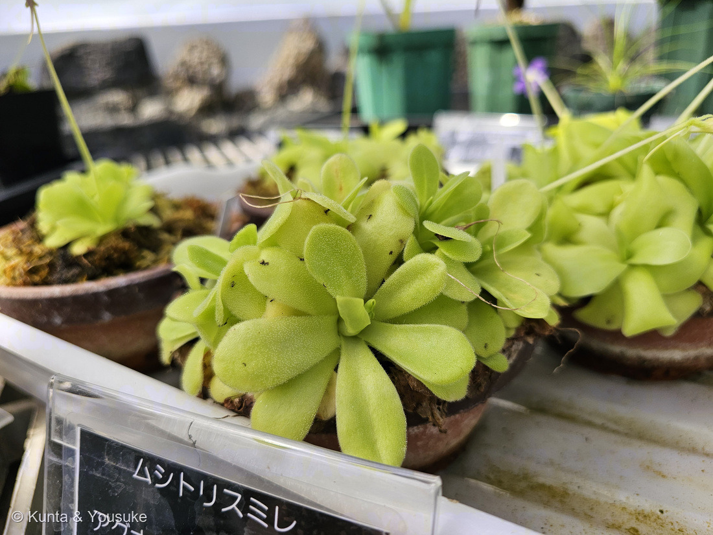
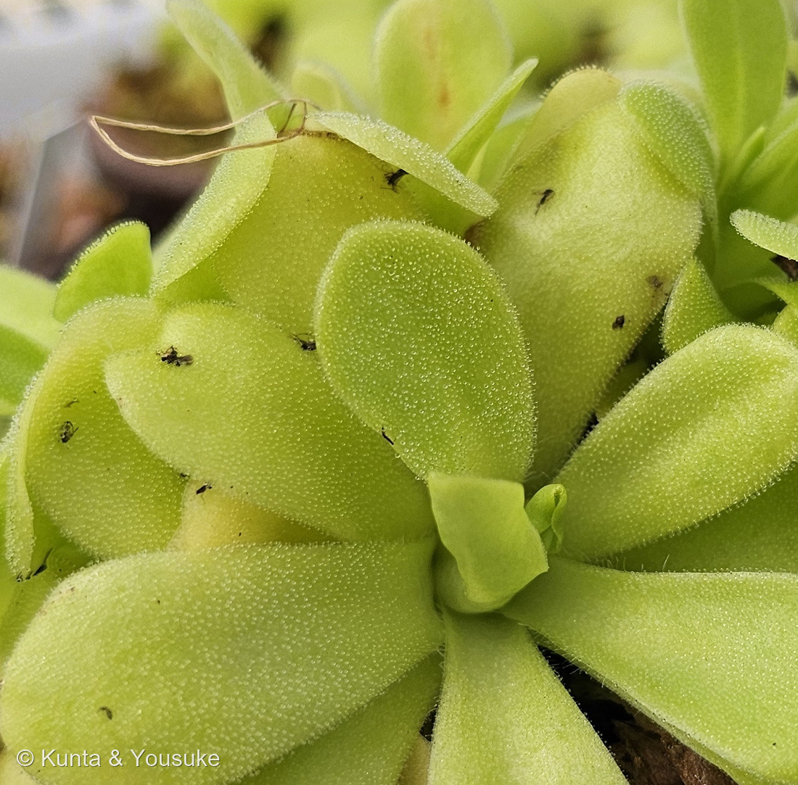
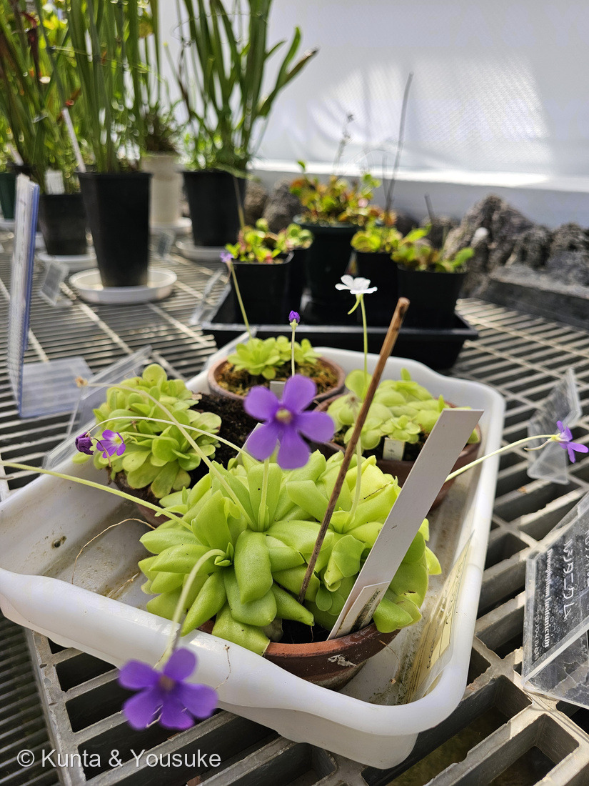
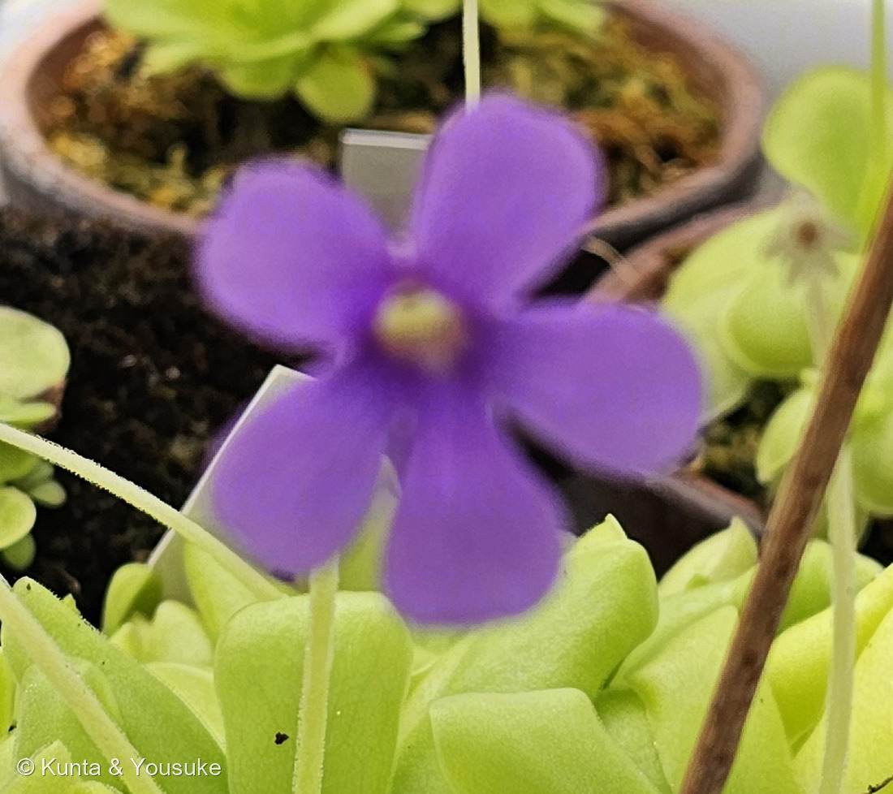
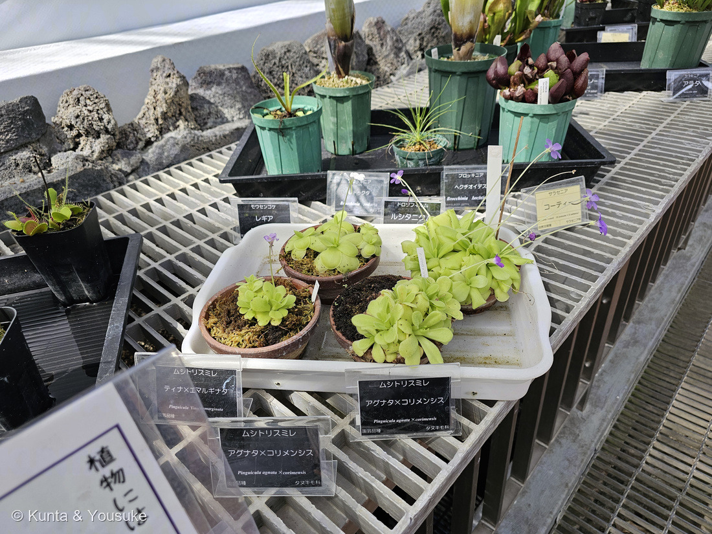

地図を読み込んでいるよ…
🔍 写真も地図も、押しているあいだ拡大して見られるよ（スマホは指を置いてすこし待ってね）。
🌍 の地図＝この子がもともと自生している場所を緑に。オーストラリアと南極をのぞく各大陸。⭐種の数がいちばん多いのは南アメリカと中央アメリカ。日本にもムシトリスミレ（Pinguicula vulgaris var. macroceras）が北海道から四国の亜高山帯〜高山帯の湿った岩場や草地に自生し、日光の庚申山には日本特産のコウシンソウがいる。⭐この棚にいた子たちはメキシコ生まれの交配種。
⭐「オーストラリアと南極を除く各大陸」にいる、ひろい顔ぶれの属だよ（英語版Wikipedia）。⭐⭐いちばん種類が多いのは南アメリカと中央アメリカ——とくにメキシコ。⭐この棚にいた子たちも、名札のとおりメキシコ生まれの交配種（アグナタはメキシコ北東部、コリメンシスはコリマ州あたり、エマルギナタもメキシコ）。⭐⭐⭐そして日本にもいる＝「北海道から四国の主に亜高山帯から高山帯の湿り気のある岩場や草地に生える」（日本語版Wikipedia）＋⭐日光の庚申山には日本特産のコウシンソウ。⚠だから地図の緑は、こんなに広いのに「どこにでもいる」わけではないよ——どの国でも、湿った岩場や湿地のような、やせた場所にかたまっている。⭐食虫植物の仲間としては221 サラセニア（北アメリカ東部）や142 ハエトリソウ（アメリカ南東部）よりずっと広く、217 ウツボカズラ（東南アジア）ともまったく重ならない。
⚠ 地図は国（日本と中国だけ県・省）までしか塗れないから、ほんとうの分布より広く見えていることがあるよ。地図はだいたいの場所。正確なところは、上の文を見てね。
ムシトリスミレ（虫取り菫）
Pinguicula spp.（ムシトリスミレ属）
英名 Butterwort（バターの草）／この棚で読めた名札＝ティナ×エマルギナタ（Pinguicula 'Tina' × emarginata）／アグナタ×コリメンシス（Pinguicula agnata × colimensis）
タヌキモ科 · Lentibulariaceae（ムシトリスミレ属）── 図鑑ではじめてのタヌキモ科＝89科目。シソ目 Lamiales ＝ 食虫植物としては4つめの目
燻太さんの一言「花は普通のスミレだけど、葉っぱは薄黄緑の粘着シート。一般的なスミレと、どれくらい系統的に離れているんだろう？」── 思っていたより、ずっと遠かったよ
⭐⭐⭐ 名前と学名の由来 ── 日本は「花」で、英語圏は「葉」で呼んだ
- ⭐⭐⭐属名 Pinguicula は、ラテン語の pinguis＝「脂ぎった・太った」から。——1561年にコンラート・ゲスナーが名づけて、その理由をこう書いた＝「propter pinguia et tenera folia…（脂ぎってやわらかい葉のゆえに）」（英語版Wikipedia）。
- ⭐⭐英名は Butterwort＝「バターの草」。——葉が「a soft feel and a greasy consistency（やわらかくて脂っぽいさわり心地）」だから（同）。⭐つまり英語圏の人は、この子を葉で名づけた。
- ⭐⭐⭐いっぽう和名は「ムシトリスミレ（虫取り菫）」。——日本語版Wikipediaによれば、矢田部博士が戸隠山で採った株にこの名をつけ、それが通名になった。⭐「スミレ」がついているのは、花がスミレそっくりだから。
- ⭐⭐⭐⭐同じ植物を、日本は花で、英語圏は葉で呼んだ。——⭐185 タカノハススキの「鷹の羽 vs しまうま」、217 ウツボカズラの「矢筒 vs 水差し」に続く3つめだよ。⭐⭐そして今回は、見ている場所そのものがちがう。
- ⚠でも、この子はスミレではないんだ。——⭐燻太さんの問いは、そこを突いていた。⭐答えは下の節に書くね。
この植物のこと ── 89科目・4人目の食虫植物
- タヌキモ科ムシトリスミレ属の食虫植物。⭐図鑑ではじめてのタヌキモ科＝89科目だよ。⚠種の数は出典でちがう＝日本語版Wikipediaは「約80種」、英語版Wikipediaは「Approximately 126 species」。⭐分布は「オーストラリアと南極を除く各大陸」で、いちばん種類が多いのは南アメリカと中央アメリカ。
- ⭐⭐⭐⭐タヌキモ科は、まるごと食虫植物の科なんだ。——「Lentibulariaceae is a family of carnivorous plants（タヌキモ科は食虫植物の科である）」（英語版Wikipedia）。⭐⭐しかも属が3つあって、3つとも罠のしくみがちがう：
- ムシトリスミレ属（Pinguicula）＝ねばねばの紙（flypaper）＝この子。
- タヌキモ属（Utricularia）＝吸いこむ袋（bladder / suction）。
- ゲンリセア属（Genlisea）＝もどれない迷路（lobster-pot／らせん）。
- ⭐⭐⭐図鑑では4人目の食虫植物（142 ハエトリソウ・217 ウツボカズラ・221 サラセニア）。⭐⭐そして4つめの「目」＝ハエトリソウとウツボカズラはナデシコ目、サラセニアはツツジ目、この子はシソ目。⭐英語版Wikipediaは、タヌキモ科を「one of six plant orders where carnivory evolved independently in flowering plants（被子植物で食虫性がべつべつに進化した6つの目のひとつ）」と書いている。⭐⭐図鑑だけで、もう3つの目に会えたことになるね。
- ⭐⭐日本にもいるよ。——「北海道から四国の主に亜高山帯から高山帯の湿り気のある岩場や草地に生える」（日本語版Wikipedia）。⭐さらに日本特産のコウシンソウ（日光の庚申山）もいる。⚠でも「日本在来のムシトリスミレは高山植物で自生地が保護されていることも多く、入手も栽培も難しい」（同）。⭐そのかわり「海外種や交配種は多く流通している」＝この棚の子たちがそれ。
⭐⭐⭐ 同定について ── 属で止めた。名札は2つ読めた
⭐ これは5つめの「属のページ」（209 ベゴニア・215 オオオニバス・216 スイレン・221 サラセニア）。
- 読めた名札は2つ ── ムシトリスミレ「ティナ×エマルギナタ」（Pinguicula 'Tina' × emarginata・園芸品種）と、ムシトリスミレ「アグナタ×コリメンシス」（Pinguicula agnata × colimensis・園芸品種）。
- ⚠でも、どの鉢がどっちかは決めていない。——白いトレーに素焼き鉢が4つ寄せてあって、名札は3枚（うち2枚が同じ「アグナタ×コリメンシス」）。⭐名札と鉢を1対1に結べないんだ（216で決めたルール）。
- ⚠名札の綴りを、ひとつだけ書きそえておくね。——名札は corimensis だったけれど、その綴りの種には当たれなかった。⭐メキシコのコリマ州にちなむ Pinguicula colimensis（コリマ州・ミチョアカン州・ゲレロ州の、石膏や石灰岩の岩に生える子）のことだと思う。⚠カタカナの「コリメンシス」はそのままで合っているよ（⚠ぼくの読み）。⭐221の「オレオフィラ」に続いて2回目だね。
- ⭐⭐'ティナ' も交配種なんだ。——Pinguicula 'Tina' ＝ P. agnata × P. zecheri。1981年に H. Weiner がつくり、2002年に品種登録された（Carnivorous Plant Resource ほか）。⭐だから「ティナ×エマルギナタ」は、交配種にさらに掛けた子だよ。
- ⭐⭐⭐この棚の子は、みんなメキシコ生まれ。——アグナタはメキシコ北東部、コリメンシスはコリマ州あたり、エマルギナタもメキシコの子。⭐日本の高山のムシトリスミレとは、ずいぶん遠いところから来ている。
⭐⭐⭐⭐⭐ 燻太さんの問い ── スミレと、どれくらい離れているの？
⭐⭐⭐ 燻太さんの「一般的なスミレと、どれくらい系統的に離れているんだろう？」。——⭐調べたら、思っていたよりずっと遠かった。
答え ── 真正双子葉植物の、いちばん大きな分かれ目の両側。
- スミレ（Viola）＝スミレ科（Violaceae）・キントラノオ目（Malpighiales）・バラ類（rosids）（英語版Wikipedia「The Violaceae family belongs to the order Malpighiales and is situated within the rosids clade of eudicots」）。⭐図鑑では156 サンシキスミレ（パンジー）がその代表だよ。
- ムシトリスミレ（Pinguicula）＝タヌキモ科（Lentibulariaceae）・シソ目（Lamiales）・キク類（asterids）（同「The family belongs to order Lamiales within the asterids clade」）。
- ⭐⭐⭐バラ類とキク類は、真正双子葉植物が二手に分かれたその分かれ目。——⭐バラ類には、サクラ・バラ・マメ・アブラナ・ミカン・カエデ…／⭐キク類には、キク・シソ・ナス・アサガオ・キョウチクトウ…
- ⭐⭐⭐⭐つまりムシトリスミレは、スミレよりも、ナスやシソやヒマワリのほうにずっと近い。——名前に「スミレ」がついているのに。
- ⚠正直に順位もつけておくね。——⭐219 ハツミドリと018 エケベリアの「単子葉と双子葉」ほどではない。⭐あれが被子植物のいちばん大きな分かれ目で、こちらは双子葉の中でいちばん大きな分かれ目。⭐それでも、じゅうぶん遠いよ。
⭐⭐⭐ じゃあ、なぜ花が似ているの？ ── 収れんだよ。
- ⭐⭐どちらの花も左右相称で、うしろに距（きょ）がある。
- スミレ＝「typically zygomorphic ... the anterior petal is larger and often spurred（ふつう左右相称で……前の花びらが大きく、しばしば距をもつ）」（英語版Wikipedia・Violaceae）。
- ムシトリスミレ＝「zygomorphic, with two lower lip petals」「a spur extending from the back（左右相称で、下唇の花びらが2枚。うしろに距がのびる）」（同・Pinguicula）。
- ⭐⭐⭐距は蜜だめ。——うしろに細長い袋をつくって、その奥に蜜をためる。⭐すると、長い口をもつ虫（ハチやハナアブやチョウ）だけが蜜にとどく。⭐⭐「左右相称の唇＋うしろの距」は、そういうお客さんに合わせた形なんだ。
- ⭐⭐⭐⭐だから、遠いなかまどうしでも同じ形になる。——⭐写真④を見て。上に2枚、下に3枚。まん中にうすい色の入口があって、その奥に蜜がある。⭐⭐スミレの花を思い出しながら見ると、ほんとうにそっくりだよ。
- ⭐名前をつけた人も、同じところを見た。——「花がスミレに似ている」から「ムシトリスミレ」。⭐⭐その見立ては形として正しくて、血すじとしてはまちがい。⭐収れんって、いつもそういう形をしているね。
⭐⭐⭐ 「薄黄緑の粘着シート」のしくみ ── 二種類の腺が、分業している
⭐ 燻太さんの言った「薄黄緑の粘着シート」、そのとおりの体だよ。
- ⭐⭐⭐葉の表面には、2種類の腺が散らばっている（英語版Wikipedia）。
- 有柄腺（peduncular glands）＝「a mucilaginous secretion which forms visible droplets（目に見える粒になる粘液）」を出して虫をつかまえる。⭐さらに虫がもがくと「release additional mucilage from special reservoir cells（貯蔵細胞から追加の粘液を出す）」＝もがくほど、ねばりが増える。
- 無柄腺（sessile glands）＝虫がつかまると窒素を感じて消化酵素を出す。⭐その中身まで書いてある＝「amylase, esterase, phosphatase, protease, and ribonuclease（アミラーゼ・エステラーゼ・ホスファターゼ・プロテアーゼ・リボヌクレアーゼ）」。
- ⭐⭐溶けたものは「absorbed back into the leaf surface through cuticular holes（クチクラの穴から葉の表面に吸い戻される）」。⭐根から吸うのではなく、葉から直接吸うんだ。
- ⭐⭐写真②を見てほしい。——葉いちめんに、こまかい水滴のような粘液の玉がびっしり。⭐⭐そして黒い小さな虫が何匹もくっついている。⭐日本語版Wikipediaの「葉の表面は天辺に球状の粘液を付けた細かい腺毛で覆われ、粘りつけられて動けなくなった虫を消化吸収する」が、そのまま写っているよ。
- ⭐⭐葉のふちが少し内へ巻いているのにも、意味があるらしい。——「Some species can bend their leaf edges slightly by thigmotropism, bringing additional glands into contact（接触屈性で葉のふちをわずかに曲げ、さらに多くの腺をふれさせる種もある）」（同）。⚠写真の葉のふちが立っているのがそれかどうかは、決めないでおくね（⚠ぼくの読みでは、たぶんそう）。
- ⭐⭐⭐⭐そして、221 サラセニアと同じ話がここにもあった。——メキシコのムシトリスミレは季節で葉を作り分ける＝「alternate between rosettes of carnivorous leaves during the warm season and compact rosettes of fleshy non-carnivorous leaves during the cool season（暖かい季節は虫を捕る葉のロゼット、涼しい季節はぎゅっと詰まった多肉の、虫を捕らない葉のロゼットに入れかわる）」（同）。
- ⭐⭐⭐221で見つけた phyllodia（虫を捕らない平たい葉）と、まったく同じ考え方。——科もちがう、目もちがう、大陸もちがうのに。⭐⭐「虫を捕るのは、あくまで足りないぶんを補うため」——その一点で、二人はおなじ答えを出しているんだ。
⭐⭐⭐ 花だけが、うんと高いところに咲く
⭐⭐ 写真③を見て。——ロゼットは台にべったり張りついているのに、花だけが細い茎で、うんと高いところにある。
- ⭐⭐⭐⭐理由が、出典にはっきり書いてあった。——「held far above the rest of the plant by a long stalk, in order to reduce the probability of trapping potential pollinators（長い花茎で株のずっと上に掲げられる。送粉してくれるはずの虫をつかまえてしまう確率を下げるため）」（英語版Wikipedia）。
- ⭐⭐⭐これ、221 サラセニアで「そう考えられている」と書いたことと同じなんだ。——⭐サラセニアのときは「かもしれない」までだったけれど、ムシトリスミレでは出典が言い切っている。⭐⭐虫を食べる植物にとって、お客さんと食べものを取りちがえないことは、それくらい大事なんだね。
- ⭐粘着シートは台すれすれ、花は空の高さ。⭐⭐同じ一株が、上と下でまったくちがうことをしている。
参考：Wikipedia・ムシトリスミレ（タヌキモ科ムシトリスミレ属の食虫植物の一種／葉の表面は天辺に球状の粘液を付けた細かい腺毛で覆われ、粘りつけられて動けなくなった虫を消化吸収する／花は唇花型で、紫色、後方に細長い距を出す／北海道から四国の主に亜高山帯から高山帯の湿り気のある岩場や草地に生える／約80種／日本にはムシトリスミレとは別に特産種のコウシンソウ／日本在来のムシトリスミレは高山植物で自生地が保護されていることも多く、入手も栽培も難しい／海外種や交配種は多く流通している）／Wikipedia (English)・Pinguicula（from Latin pinguis meaning "fat"／propter pinguia et tenera folia (Conrad Gesner, 1561)／a soft feel and a greasy consistency／peduncular glands ... a mucilaginous secretion which forms visible droplets／release additional mucilage from special reservoir cells／sessile glands ... amylase, esterase, phosphatase, protease, and ribonuclease／absorbed back into the leaf surface through cuticular holes／bend their leaf edges slightly by thigmotropism, bringing additional glands into contact／alternate between rosettes of carnivorous leaves during the warm season and compact rosettes of fleshy non-carnivorous leaves during the cool season／zygomorphic, with two lower lip petals／a spur extending from the back／held far above the rest of the plant by a long stalk, in order to reduce the probability of trapping potential pollinators／Approximately 126 species／the largest number of species is in South and Central America）／Wikipedia (English)・Lentibulariaceae（Lentibulariaceae is a family of carnivorous plants／Pinguicula (flypaper) ／Utricularia (bladder/suction)／Genlisea (lobster-pot/corkscrew)／order Lamiales within the asterids clade／one of six plant orders where carnivory evolved independently in flowering plants）／Wikipedia (English)・Violaceae（The Violaceae family belongs to the order Malpighiales and is situated within the rosids clade of eudicots／about 1000 species in about 25 genera／typically zygomorphic with a calyx of five sepals／the anterior petal is larger and often spurred）／Wikipedia・ミミカキグサ（タヌキモ科に属する多年生の食虫植物／その姿が耳かきに似るのが名前の由来である／この地下茎および時には地上葉にも捕虫嚢をつけ、ミジンコなどのプランクトンを捕食する／花期は……おおむね7月-9月頃／高さ10cmほどの花茎を伸ばし、先端に黄色い花をつける／湿地の湿った地面か、ごく浅い水域に出現し、時に水田でもみられる）／Carnivorous Plant Resource ほか（Pinguicula 'Tina' ＝ P. agnata × P. zecheri・1981年 H. Weiner 作出・2002年に品種登録）／⭐広島市植物公園「世界の食虫植物展」（2026年7月18日〜8月16日・展示温室・協力 広島食虫植物同好会）の名札